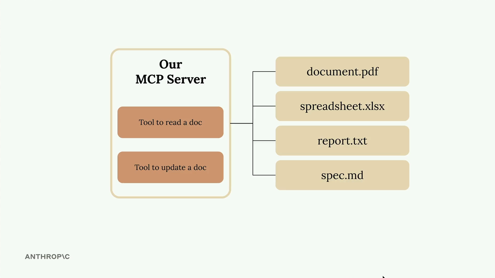

Writing an MCP server becomes much simpler when you use the official Python SDK — define tools with decorators and let the SDK handle the JSON schema heavy lifting.

In this example, we're creating a server with two core tools:
All documents live in a simple Python dictionary — keys are document IDs, values are the document content.
docs = {
"document.pdf": "...",
"spreadsheet.xlsx": "...",
"report.txt": "...",
"spec.md": "...",
}
cli_projectA CLI chat app where Claude talks to a local FastMCP document server via stdio.
cli_project/
├── main.py ← entry point: wires everything
├── mcp_server.py ← FastMCP server (docs dict)
├── mcp_client.py ← MCPClient wrapper (stdio)
├── .env ← ANTHROPIC_API_KEY, CLAUDE_MODEL
└── core/
├── claude.py ← Anthropic SDK wrapper
├── chat.py ← base chat loop
├── cli_chat.py ← @mentions + /commands
├── cli.py ← prompt-toolkit UI
└── tools.py ← tool-call dispatch
.env, creates a Claude service, then spawns mcp_server.py as a subprocess over stdio.list_tools() / list_prompts() to discover what the server offers.@docs and /commands, sends messages to Claude.MCPClient.call_tool() → the server runs it on the in-memory docs dict.Type @deposition.md to inline that document's content into Claude's context.
Type /summarize report.pdf to invoke a prompt defined by the MCP server.
Claude autonomously calls read_doc / edit_doc tools exposed by the server.
docs dictionary in mcp_server.pydocs = {
"deposition.md": "This deposition covers the testimony of Angela Smith, P.E.",
"report.pdf": "The report details the state of a 20m condenser tower.",
"financials.docx":"These financials outline the project's budget and expenditures.",
"outlook.pdf": "This document presents the projected future performance of the system.",
"plan.md": "The plan outlines the steps for the project's implementation.",
"spec.txt": "These specifications define the technical requirements for the equipment.",
}
pyproject.tomlcore/claude.py to call Claude and handle tool-use responses.FastMCP for the server, ClientSession + stdio_client for the client.core/cli.py — tab completion, history, and the @// prompt..env file at startup so ANTHROPIC_API_KEY and CLAUDE_MODEL are available as env vars.
Managed with uv — install via uv pip install -e . and run with uv run main.py.
The Python MCP SDK makes server creation straightforward — initialize with a single line.
from mcp.server.fastmcp import FastMCP mcp = FastMCP("DocumentMCP", log_level="ERROR")
FastMCP is the high-level helper from the MCP SDK that registers tools,
resources, and prompts behind a clean decorator API.
dictdocs = {
"deposition.md": "... Angela Smith, P.E.",
"report.pdf": "... 20m condenser tower.",
"financials.docx": "... budget and expenditures",
"outlook.pdf": "... projected performance",
"plan.md": "... implementation steps",
"spec.txt": "... technical requirements",
}
Documents live in memory — keys are document IDs, values are the document content. No DB, no files, just a dict.
Field
descriptions to auto-generate the schema Claude consumes.
The first tool reads document contents by ID. The decorator registers it; the function is the implementation.
@mcp.tool( name="read_doc_contents", description="Read the contents of a document and return it as a string." ) def read_document( doc_id: str = Field(description="Id of the document to read") ): if doc_id not in docs: raise ValueError(f"Doc with id {doc_id} not found") return docs[doc_id]
@mcp.tool(...) registers the function as a callable tool. The name and description are what Claude sees when discovering tools.
Parameters use Python type hints. Field(description=...) from Pydantic gives Claude a clear explanation of each argument.
Raising ValueError is the idiomatic way — the SDK converts Python exceptions into a tool error Claude can reason about.
The second tool performs simple find-and-replace operations on documents.
@mcp.tool( name="edit_document", description="Edit a document by replacing a string in the documents content with a new string." ) def edit_document( doc_id: str = Field(description="Id of the document that will be edited"), old_str: str = Field(description="The text to replace. Must match exactly, including whitespace."), new_str: str = Field(description="The new text to insert in place of the old text."), ): if doc_id not in docs: raise ValueError(f"Doc with id {doc_id} not found") docs[doc_id] = docs[doc_id].replace(old_str, new_str)
Claude Code can itself consume MCP servers. Register yours and your tools become available in every conversation — no API key, no custom CLI.
Writes a .mcp.json file in the project directory. Server
is only active when you open Claude Code inside this folder.
$ cd /path/to/cli_project $ claude mcp add depverse --scope project \ -- uv --directory "/path/to/cli_project" \ run mcp_server.py
Adds it to your Claude Code user config. Available in every project you open on this machine.
$ claude mcp add depverse --scope user \ -- uv --directory "/path/to/cli_project" \ run mcp_server.py
claude mcp add <name> # how Claude Code labels it --scope project|user # where to store the config -- # everything after is the launch cmd uv --directory ... run mcp_server.py # spawns server over stdio
Claude writes the MCP entry to .mcp.json (project) or the user config.
MCP servers are loaded at startup — quit and relaunch so the new server gets spawned.
/mcp
Run the slash command to see the server connected and all tools listed.
"What's the latest version of react on npm?" — Claude picks the tool automatically.
claude mcp list
Show all registered servers
claude mcp get depverse
Show the config for one server
claude mcp remove depverse
Unregister the server
/mcp
Inspect servers inside Claude Code